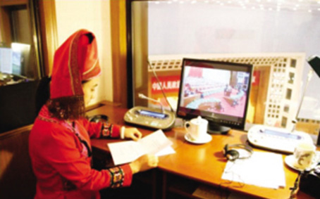

全国“两会”同声传译：人民大会堂里的“业务检阅”
2015年12月11日 来源：《中国民族报》

全国“两会”民族语文同声传译人员在人民大会堂四楼同传室工作
每年全国“两会”开幕时，当身着鲜艳少数民族服饰的民族语文翻译人员，精神饱满地大步踏入人民大会堂时，都会成为媒体镜头聚焦的对象。而他们背后艰辛的翻译工作，却很少为大众所知。
在全国“两会”上做民族语文翻译，把中央的声音第一时间传递给在首都参会的少数民族代表和委员，这是一项责任极大的政治任务。同时，对翻译人员来说又是一项巨大的挑战。
“1957年凉山解放以后，很多彝族代表可以通过自己熟悉的民族语言来参政议政，彝语、彝文甚至出现在全国最高会议上，彝族的代表委员们都觉得既新奇，又自豪。”中国民族语文翻译局彝语文翻译室主任沙马吉哈介绍。
在彝语文室工作近30年的王昌富至今仍清楚地记得第一次参加全国“两会”同声传译时的情景。“心里还是很紧张的，怕出错。”王昌富说，虽然在会前已把一些政治性词语的翻译，比如“改革”、“宏观调控”等协商确定，但在现场，因为同样的句子彝文要比汉语长10%，为了达到同步性，语速必须加快，翻译人员得思想高度集中。
壮语文翻译室译审关仕京第一次参加全国“两会”同声传译是在1987年。他记得大会开始前15分钟，翻译人员就进入壮文同传室，摆好文件，戴上耳机，调好话筒，准备“战斗”。当党和国家领导人微笑着招手走上主席台时，大会堂里爆发出雷鸣般的掌声，大会主持人发令：“请全体起立！奏国歌！”关仕京立即用壮语翻译。之后，大会开始，全国政协主席邓颖超讲话。
“翻译邓主席的讲话时，开头我有点紧张，语言不够流畅，但后来静下心来，发现她的讲话节奏分明，言简意赅，通俗深刻，我也能有板有眼、声情并茂地传译出来。”关仕京说，当他翻译的壮语通过电缆，传送到代表委员们座席的听筒里时，他感觉自己在大雅之堂经受住了考验，感到非常自豪！
维吾尔语文室主任阿布力孜坦言，每年做全国“两会”的同声传译都有压力，因为汉语和维吾尔语的长度比大概是1:1.6。对代表、委员的现场发言进行翻译时，同声传译人员的语速必须比发言人的语速快一半，否则，就会落词丢句，不能进行完整的翻译。
“现在，每年‘两会’都有新词术语出来，比如‘一带一路’、‘众创’、‘顶层设计’等，有些词语很难翻译。”阿布力孜说，“因此，我们得提前做功课，找到几种不同的维吾尔文译法，从中选优，加以润色，再集体确定最好的译法。”
“‘两会’同声传译可不是一件轻松的工作。”这是所有参加过“两会”同声传译的翻译人员的共同感受。翻译时，眼睛要看着稿子，耳朵要听着讲话人的语速，嘴巴还要及时翻译，眼看、耳听、口说必须协调一致。
随着时代的发展，翻译设备不断更新，过去简单的耳机话筒已变成了多媒体操作设备，翻译人员也需要不断学习使用新的设备。
与此同时，少数民族代表、委员对翻译的要求也越来越高。“现在，很多少数民族代表委员都精通双语，翻译人员就算念错一个小数点，他们也能听出来。”王昌富说，
“这就要求我们翻译人员要不断地提升自己的水平。”
不过，也正是因为有每年‘两会’同声传译这样的“大考”压力和挑战，一批批年轻的民族语文翻译人员才得到扎实的锻炼，从而快速成长。